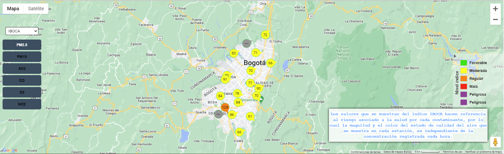

El presente proyecto busca como objetivo mejorar la plataforma actual de la Red de Monitoreo de la Calidad del Aire de
la ciudad de Bogotá (RMCAB). Ya que la red de monitoreo actual es obsoleta y no entrega los datos suficientes para tomar
las medidas necesarias y promover estrategias que ayuden a la reducción de la contaminación en la ciudad, para ello, con
base en el uso de herramientas de la era digital, el objetivo es consolidar el soporte tecnológico para elaborar informes
precisos de contaminación con el fin de utilizar esta información para desarrollar estrategias específicas en Bogotá que
ermitan la reducción de contaminantes y las enfermedades causadas por estos.Por ello, la aplicación de tecnologías como el Internet
de las Cosas (IoT), el análisis de datos y, por supuesto, el desarrollo de redes que faciliten a los ciudadanos una información más democrática,
permitirá generar informes efectivos sobre el estado de la calidad del aire en la ciudad.
Finalmente, la plataforma tiene como objetivo fortalecer las medidas ya tomadas y promover la consolidación del llamado
plan estratégico para la gestión integral de la calidad del aire en Bogotá en 2030 para lograr una mayor igualdad, democracia
y cambio en nuestro entorno en beneficio del medio ambiente y la población, para que sea más seguro y amigable.
Se van a usar bases de datos soportados por MYSQL que almacenarán la información en tiempo real da cada contaminante según su punto.
El diseño completo de la plataforma será creado a partir del lenguaje de programación PYTHON, usando PHP y HTML para la parte visual del desarrollo de la plataforma web.
Para el diseño de las estadísticas se va a usar EXCEL.
El diseño del mapa será aportado por Google maps.

En particular, la ciudad de Bogotá enfrenta un problema de contaminación ambiental que es causado principalmente por material particulado
proveniente de diversos factores, incluyendo la combustión de fuentes móviles, el mal estado de las vías y en ciertas épocas del año, partículas
provenientes del transporte de incendios forestales. Ahora, para impulsar la reducción de contaminantes en la ciudad, Bogotá ha desarrollado un
plan estratégico para la gestión integral de la calidad del aire al 2030, que la administración regional firmó en 2021.
Incluye estrategias que se adoptarán durante la próxima década y tiene como objetivo alinear la agenda con las últimas directrices de la OMS sobre contaminantes
y sus niveles máximos permisibles. La OMS recomienda nuevos niveles de calidad del aire para 6 contaminantes en sus últimas directrices: partículas
(PM2.5 y PM10), ozono (O3), dióxido de nitrógeno (NO2), dióxido de azufre (SO2) y monóxido de carbono (CO). Por tanto, los beneficios del proyecto serán
poder desarrollar una plataforma que pueda generar informes de las concentraciones de agentes contaminantes del aire de la ciudad de
Bogotá para posteriores análisis.